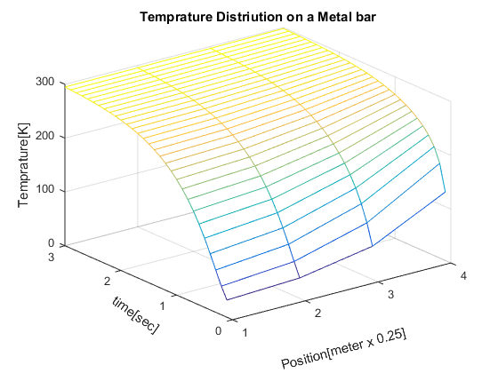

clear
clc;
x(1:4)=20;
time=0;
timef=3;
a(2:4)=1;
b(1)=-1.5;
b(2:4)=-3;
c(1:3)=1;
display('THE SOLUTION BY TDMA AT TIME seconds');
fprintf('%3s %5s %10s %10s %10s\n','Time','T1','T2','T3','T4')
count=1;
hh=ones(30,4);
for time=0.1:0.1:timef
xold=x;
d(1)=-0.5*xold(1);
d(2)=-xold(2);
d(3)=-xold(3);
d(4)=-xold(4)-300;
i=1;
n=4;
beta(i)=b(i);
gamma(i)=d(i)/beta(i);
il=i+1;
for j=il:n
beta(j)=b(j)-a(j)*c(j-1)/beta(j-1);
gamma(j)=(d(j)-a(j)*gamma(j-1))/beta(j);
end
x(n)=gamma(n);
n1=n-i;
for k=1:n1
j=n-k;
x(j)=gamma(j)-c(j)*x(j+1)/beta(j);
end
fprintf('%3g', time); fprintf(' %8.4f', x(1)); fprintf(' %8.4f', x(2));
fprintf(' %8.4f', x(3)); fprintf(' %8.4f', x(4));
fprintf('\n');
hh(count,1:4)=[x(1),x(2),x(3),x(4)];
count=count+1;
end
[tkt,llent]=meshgrid(1:1:n,0.1:0.1:timef);
mesh(tkt,llent,hh)
title('Temprature Distriution on a Metal bar')
xlabel('Position[meter x 0.25]','Rotation',15)
ylabel('time[sec]','Rotation',-35)
zlabel('Temprature[K]')
THE SOLUTION BY TDMA AT TIME seconds
Time T1 T2 T3 T4
0.1 31.9149 37.8723 61.7021 127.2340
0.2 53.2096 63.8569 100.4889 175.9077
0.3 78.5928 91.2844 131.4034 202.4370
0.4 104.3467 117.2236 156.0398 219.4923
0.5 128.5549 140.6590 176.1986 231.8970
0.6 150.4507 161.3986 193.0861 241.6610
0.7 169.8656 179.5730 207.4548 249.7053
0.8 186.9039 195.4231 219.7923 256.4992
0.9 201.7767 209.2131 230.4394 262.3129
1 214.7230 221.1962 239.6525 267.3218
1.1 225.9762 231.6028 247.6359 271.6526
1.2 235.7503 240.6374 254.5591 275.4039
1.3 244.2365 248.4796 260.5650 278.6563
1.4 251.6031 255.2863 265.7763 281.4775
1.5 257.9970 261.1939 270.2985 283.9253
1.6 263.5464 266.3211 274.2230 286.0495
1.7 268.3628 270.7709 277.6289 287.8928
1.8 272.5428 274.6328 280.5848 289.4925
1.9 276.1706 277.9845 283.1500 290.8809
2 279.3191 280.8933 285.3764 292.0857
2.1 282.0516 283.4178 287.3085 293.1314
2.2 284.4230 285.6087 288.9854 294.0389
2.3 286.4811 287.5102 290.4407 294.8266
2.4 288.2673 289.1604 291.7037 295.5101
2.5 289.8175 290.5926 292.7999 296.1033
2.6 291.1629 291.8356 293.7512 296.6182
2.7 292.3305 292.9143 294.5768 297.0650
2.8 293.3438 293.8505 295.2934 297.4528
2.9 294.2233 294.6630 295.9152 297.7893
3 294.9865 295.3682 296.4550 298.0814
